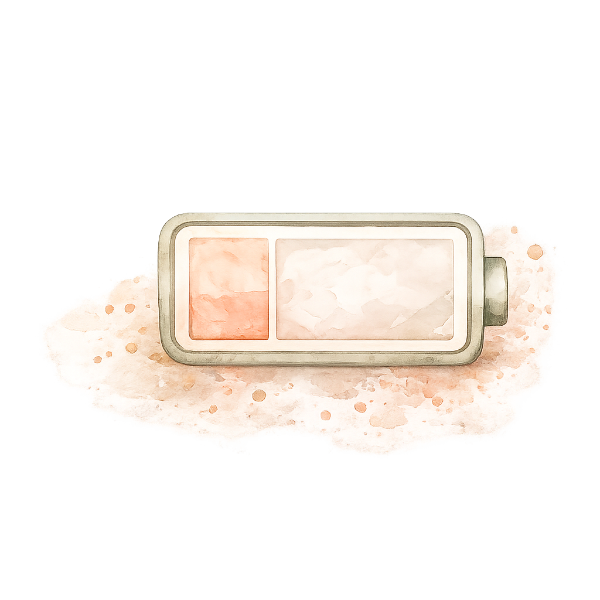
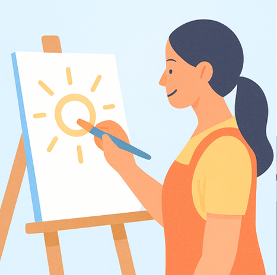
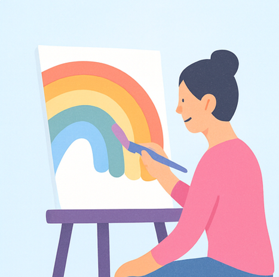
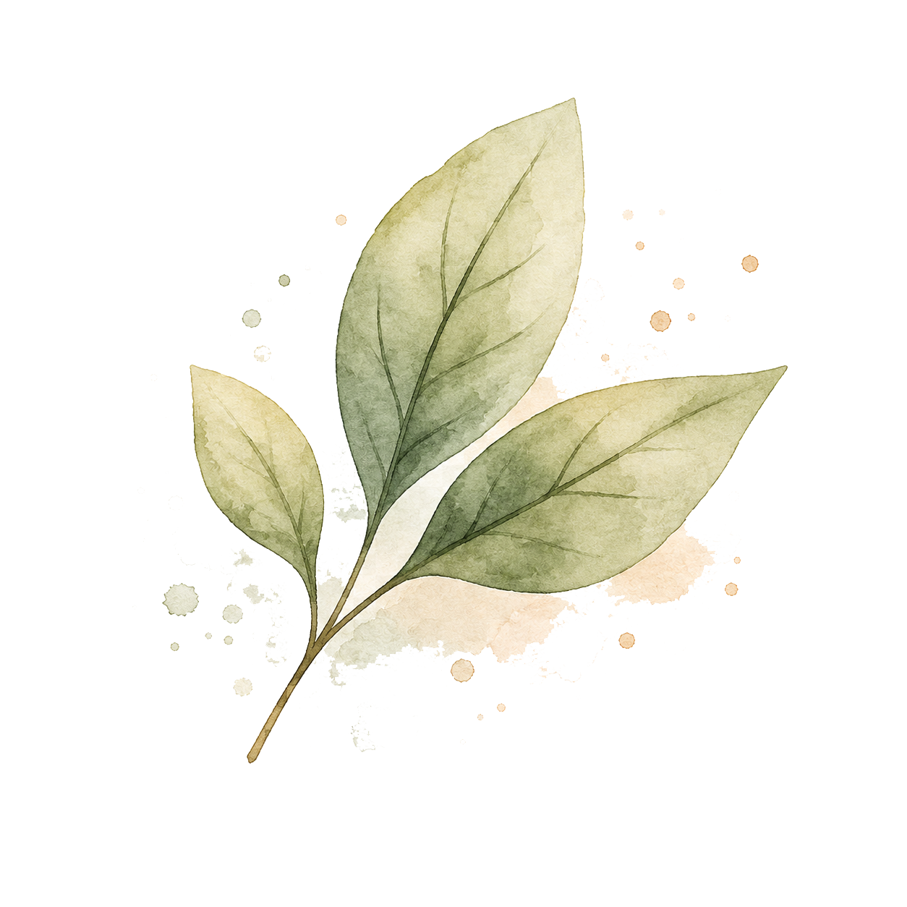
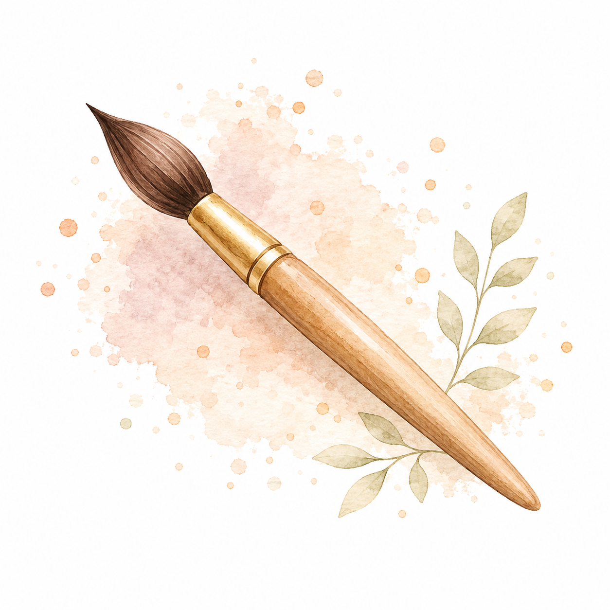
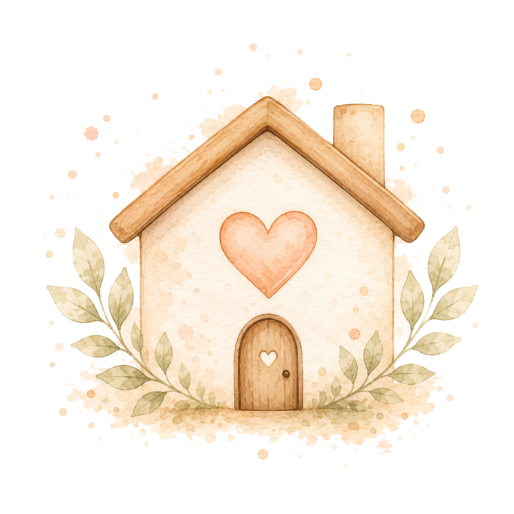

Um espaço de escuta, acolhimento e expressão através da arte para mulheres que desejam se reconectar consigo mesmas.
Atendimento online em português para mulheres no Brasil, em Portugal e em qualquer lugar do mundo.
AGENDAR CONVERSAVocê cuida de muitas pessoas e sente que esqueceu de si.
A criatividade parece distante.

O cansaço ocupou espaço demais.
Existe uma parte de você pedindo pausa, escuta e respiro.
No Atelier da Escuta, a arte não precisa ser bonita, perfeita ou produtiva. Ela pode ser caminho, linguagem e abrigo.
Um encontro online para expressar emoções, organizar pensamentos e se escutar através da arte, mesmo sem saber desenhar.
Formato: online, por vídeo, áudio ou orientação criativa guiada.
Duração: 50 minutos.
Valor: R$ 90

Acompanhamento criativo com propostas personalizadas, devolutiva sensível e suporte leve ao longo da semana.
Inclui:
– 2 propostas criativas por semana
– retorno reflexivo sobre cada atividade
– suporte leve por mensagens
Valor: R$ 160 / semana

Um processo contínuo de arteterapia para mulheres que desejam se escutar com mais profundidade, constância e cuidado.
Inclui:
– 4 sessões online de 50 minutos
– material reflexivo semanal
– suporte criativo leve pelo WhatsApp
Valor: R$ 350 / mês

Mulheres em momentos de mudança.
Professoras e educadoras.

Artistas e artesãs.
Mulheres que desejam voltar a ouvir a própria voz.

Mulheres que precisam de um espaço seguro para respirar.
Você não precisa ter experiência artística. Aqui, a criação não é prova. É presença.
ARTETERAPIA PARA MULHERES CRIATIVASEste espaço foi criado para mulheres, professoras, artistas, artesãs, educadoras e mulheres em momentos de transição que sentem vontade de voltar a criar, respirar e se reconhecer.